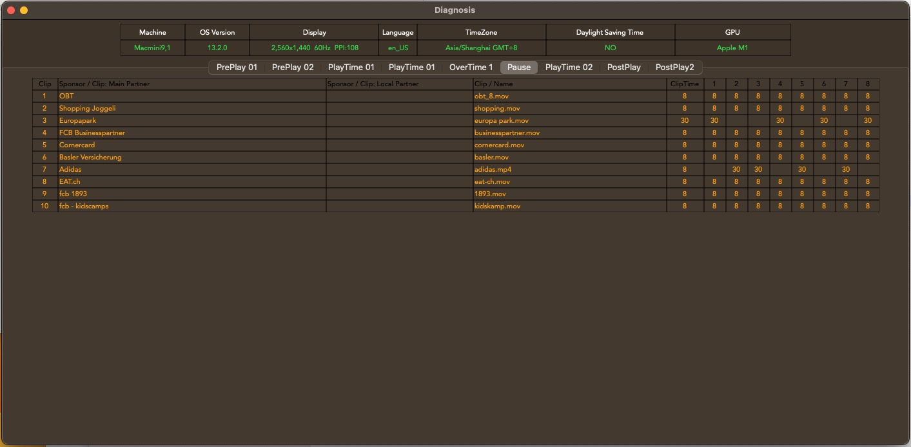
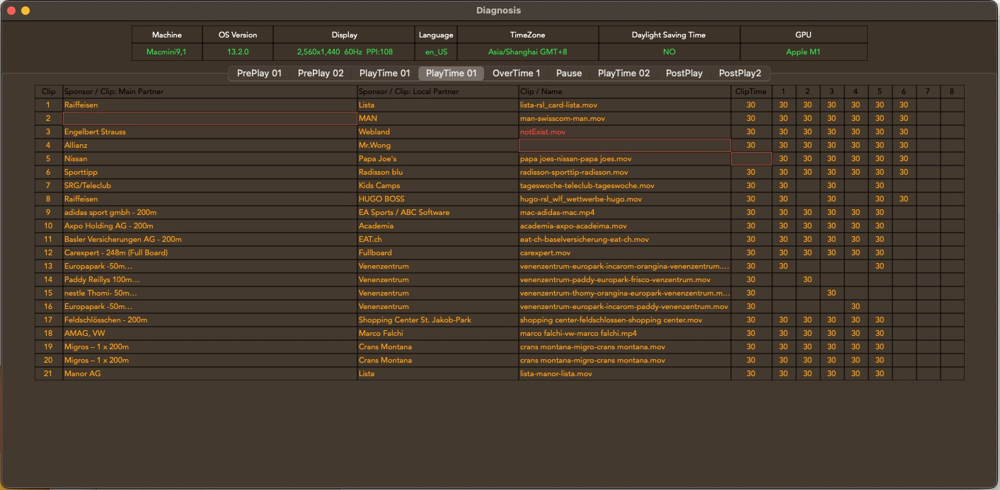

Diagnosis
- Select Menu 'Help'->Diagnosis

- Upper part is about system information e.g(OS, Display)

- Lower part is preview playlist
When empty content in column of 'Main partner' and 'Clip /Name ' and 'ClipTime', the border's color is red.
When 'Clip /Name ' is filled but file is not found ,the text color is red.
